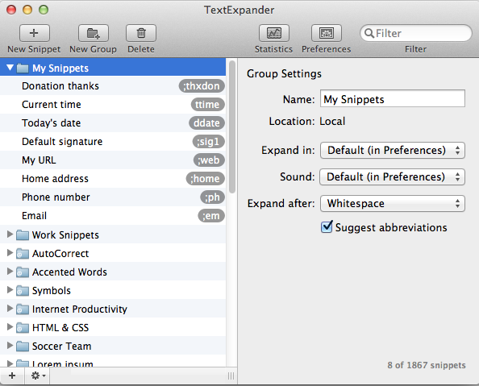

Note: this is old. Very old. I’m no longer a graduate student though I do still teach my graduate students to use these tools or a variation thereof. -RS, Feb 2017
Below I’ve highlighted some of the tools that I use to keep myself from going insane while finishing my degree. I call it the Electronic Academic Workflow.
Mendeley

Mendeley is free software used to collect, organize , and annotate research articles, books, and other references. The Microsoft Word plug-in allows you to include citations in the text of your writing and automatically create bibliographies based on only what is cited in the paper using the citation style of your choice. If a PDF is attached to a bibliographic entry in Mendeley, you can highlight, type on, and add notes to the file just as you would if it were printed out (but this way everything is searchable). Auto-import will bring in PDFs you save to your computer and fill in the appropriate database fields (authors, title, journal, etc.) automatically. The website has a collection of user groups that share papers and notes. It also backs up your collection to the cloud and has mobile apps for both Android (unofficially) and iPhone/iPad. Make sure to check with your school to see if you’re eligible to get the premium Mendeley Institutional Edition for free!
Citavi

Paid software to collect, organize, remark on, annotate, and cite research articles, books, etc. Does much of what Mendeley does but I prefer it more for the actual quotations and citations that I’m using in my papers. That is, Mendeley is where I do my active reading and note-taking, then I collect the quotes (both direct quotes and paraphrases) in Citavi to use in my papers. This just keeps things separate, which can be a good thing. If you have a text that isn’t scanned or available online (like a textbook), I suggest putting the bibliographic record in Mendeley just to keep it in your “library,” but breaking up the Citavi entries into chapters. Your organizational structure may vary, clearly. It also has a task system built in, but it isn’t quite as robust as LiquidPlanner or Asana. (Adding Citavi into the mix between Mendeley and Scrivener was an idea first, to my knowledge, posited by Mickey the BLOSSOMING-Fledgling Researcher.)
Scrivener
Paid software for organizing your writing. Built for fiction or non-fiction. Mainly for Mac but a Windows version was recently released. Extremely feature-filled and is great for organizing the myriad and disparate ideas that go into a large academic project. The only downside to Scrivener is that it is visually very busy. While it will help you organize all your writing, it can take quite some time to get used to working in the environment. Sticking with it is well worth the time and effort, however. (Screenshot via Kelly Falcone. Her write-up is worth reading.)
LiquidPlanner
Free (for teachers and students) project tracking. Fantastic for visualizing and keeping track of how much effort and time is required for projects, from individual class projects or your entire degree. Has mobile applications and social/team capabilities. Really helps you peg down your timeline. Open an account with the free trial first, then visit here to upgrade to the free education-based license. (Title is an affiliate link.)
Asana
Free web service for tracking tasks. Has mobile applications and social/team capabilities. The interface is intuitive and attractive. It’s preferable, for me, for just those one-off to-dos. “Return library book” or “Water the garden,” that sort of thing. I leave this and LiquidPlanner as pinned tabs in Chrome. There is a social aspect to it if you’re working in teams that needs a to-do manager, but I can’t speak to how well it works as everything I do is solo. It’s more for just keeping the list of things rather than trying to organize and visualize.
Evernote
[]evernote.jpeg)
Free software and web service for collecting … anything, really. Think of it as an “everything bucket.” Evernote is my repository for everything that’s not a research paper. Whether it’s just an article that I want to keep track of, notes from a meeting at work, or copies of important emails to and from my committee, it all goes here. The web clipper will snag anything from any page and import it. Plays very nicely with IFTTT and can automate a great deal of your online presence. There’s no shortage of write-ups on Evernote. For just about anything you’d need, check out Lifehacker’s Evernote tag. (Image displayed is the web service.)
RedLaser (Now defunct)

App for scanning barcodes. Can create lists of them, which makes it easy to import a large collection of books into services like GoodReads or Citavi. Not really part of my workflow, but nice to have around when I need it, especially when you’re in a bookstore or someone’s office and they have a book you want to remember to get. Alternatively, in that case, you could just take a picture of the cover as an Evernote note. Available for Android, iOS, and Windows phones.
PhraseExpress/TextExpander/Etc

Text replacement software. For example, typing “mmr” could be set to replace an entire multivariate multiple regression SPSS syntax. I have a rather lengthy one set to “sig;” that inserts my full email signature, plus a random quote from a list of 200 or so. (Keeps the sig fresh, I feel.) Quicker than copying and pasting, and prevents user error. If you type something over and over and over then software like this becomes a huge boon and saves ridiculous amounts of time (not to mention the relief of knowing that if it’s right once, it’s right every time).
So, those are the main players that keep me going in a (relatively) smooth fashion. Need an APA citation real quick? Right-click the entry in Mendeley and copy as a citation. Need to find a quote but only remember a couple words? Citavi to the rescue. Unexpectedly got an extra couple hours free? LiquidPlanner shows me what I really need to be working on next. (This was originally posted on Medium.)